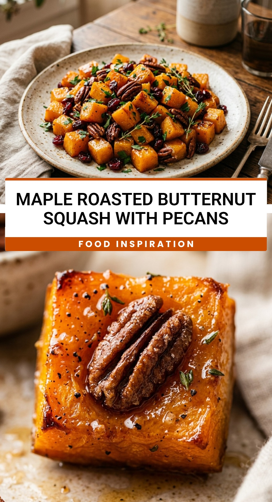

Maple Roasted Butternut Squash With Pecans
October 1, 2026

As the leaves begin to change and the air turns crisp, there is nothing quite like the aroma of roasting vegetables filling the kitchen. Maple Roasted Butternut Squash with Pecans is the ultimate autumn side dish. It brings together the natural earthiness of squash with the deep, caramel-like sweetness of pure maple syrup and the satisfying crunch of toasted pecans. It is a recipe that feels fancy enough for a holiday table but is simple enough for a Tuesday night dinner.
Recipe Information
Prep Time: 15 minutes
Cook Time: 35 minutes
Total Time: 50 minutes
Servings: 4
Difficulty Level: Easy
Nutrition Information
Calories per serving: 215 kcal
Protein: 2g
Carbohydrates: 28g
Fat: 11g
Fiber: 5g
Sugar: 14g
Sodium: 155mg